Plain Struct as Payload
Warning
The ROS 2 integrations are currently prototypes and have not yet been validated in real ROS 2 workflows. They are recommended only for experimentation in development deployments.
In the ROS 2 interface description language (IDL) the types of the message fields dictate the native types generated. If a definition does not contain any bounded or dynamic fields, the generated native types are completely self-contained and can thus be placed in shared memory.
float64 scalar # fixed-width basic type, shared-memory compatible
float64[3] fixed_array # fixed-size array, shared-memory compatible
float64[<=8] bounded # bounded sequence, heap-backed
float64[] dynamic # dynamic sequence, heap-backed
string text # dynamic string, heap-backed
For ROS 2 topics whose message definitions are free of bounded and dynamic fields, a convenient approach is to let the gateway's PlainStruct translator (de)serialize messages to CDR as they cross the boundary between ROS 2 and iceoryx2, and store the plain struct directly in shared memory to be consumed by iceoryx2 applications. The (de)serialization is done once after which the payload is shared without copies.
Topology
To demonstrate the approach, let's build a minimal pipeline that carries a self-contained message through both domains. A limiter application in iceoryx2 that subscribes to the /cmd_vel topic, clamps the received velocity to a maximum, and republishes it on /cmd_vel_limited.
Both topics use geometry_msgs/msg/Twist, which consists of two Vector3s of fixed-width floats and contains no bounded or dynamic fields.

To keep things simple, the ros2cli is used to mock both ends, with ros2 topic pub feeding commands and ros2 topic echo displaying the limited result.
Setting Up
Note
The integrations are verified against Jazzy with rmw_fastrtps_cpp and Humble with rmw_cyclonedds_cpp. All commands below assume a sourced ROS 2 environment, where <distro> is your distribution.
First, let's set up the working directory for our application:
In our pipeline, the Twist message describes the payload that crosses the boundary between the two domains. From the one message definition, the types for both the C/C++/Python ROS 2 side and the Rust iceoryx2 side are generated. On up-to-date installations, the ROS 2 distribution ships the generated Rust types alongside the C, C++ and Python ones, so the iceoryx2 application can use them directly.
Message Generation on Older Installations
Older installations of ROS 2 distributions do not ship the Rust types. On up-to-date installations, skip ahead to the application project.
On older installations, the Rust types must be generated from source in a colcon workspace, next to the project:
~/iceoryx2_ros2/
├── messages/ # colcon workspace generating the Rust message crates
└── twist_limiter/ # cargo project of the iceoryx2 application
The workspace needs the sources of rosidl_generator_rs, which emits the Rust types, from the rosidl_rust repository, and of the packages providing the message definitions. The Twist message is part of common_interfaces, which depends on builtin_interfaces from the rcl_interfaces repository.
As conventional for ROS 2, vcstool is used here to pull in the source. Here is the .repos configuration. Be sure to substitute <distro> with the ROS 2 distro being used (e.g. jazzy):
repositories:
rosidl_rust:
type: git
url: https://github.com/ros2-rust/rosidl_rust.git
version: 0.5.0
common_interfaces:
type: git
url: https://github.com/ros2/common_interfaces.git
version: <distro>
rcl_interfaces:
type: git
url: https://github.com/ros2/rcl_interfaces.git
version: <distro>
Then pull the sources into the workspace:
And build the generator and the message packages to generate the Rust types:
Each message package installs a Rust crate under install/<package>/share/<package>/rust. The commands in the following sections include sourcing the install space of this workspace as a commented-out line. Uncomment it on older installations:
Application Project
Now let's create a cargo project for the iceoryx2 application in our pipeline:
The generated message crates are included through the ros-env crate, which provides the message crates of the sourced environment under its root, e.g. ros_env::geometry_msgs:
[package]
name = "twist_limiter"
edition = "2024"
publish = false
[dependencies]
iceoryx2 = { version = "X.Y.Z" } # select the desired `iceoryx2` version
# iceoryx2 = { git = "https://github.com/eclipse-iceoryx/iceoryx2", branch = "main" } # if the gateway is built from `main`
ros-env = { version = "0.2" }
rosidl_runtime_rs = { version = "0.7" } # the version `ros-env` depends on
The iceoryx2 version must match the one the gateway is built from. If the gateway is built from the main branch, use the commented-out git entry instead of a released version.
Now that everything is in place, let's create a basic placeholder binary to confirm the build works and that the generated messages are accessible.
The generated crates contain two variants of each message. The idiomatic geometry_msgs::msg::Twist uses native Rust types, while its counterpart in the rmw module is #[repr(C)] and matches the C struct the gateway (de)serializes, so the rmw variant must be used:
The generated crates link against the C libraries of their message packages, so the ROS 2 distribution must be sourced before building the project:
source /opt/ros/<distro>/setup.bash
# source ~/iceoryx2_ros2/messages/install/setup.bash # on older installations
cargo build
Then run it from the same shell, as the libraries are also loaded when the binary starts:
$ cargo run
Twist { linear: Vector3 { x: 0.0, y: 0.0, z: 0.0 }, angular: Vector3 { x: 0.0, y: 0.0, z: 0.0 } }
A successful build and run, with the above output, confirms that the generated Rust types are reachable and the project is set up properly.
The Twist Limiter
With the project skeleton set up, let's implement the limiter. It will consist of a module for the payload type and the application itself:
~/iceoryx2_ros2/twist_limiter/
├── Cargo.toml
├── mapping.toml # gateway configuration, see below
└── src/
├── main.rs # the application
└── twist.rs # the payload type
The Payload
The generated Twist type needs some boilerplate for it to be used with iceoryx2. First we must implement the ZeroCopySend trait to indicate that the type can be stored in shared memory. The type name it reports must be the ROS 2 type name, as described in Application Configuration. This name is exposed in the generated Rust message crate.
Create the module for the payload type:
And add the wrapper to it:
use iceoryx2::prelude::*;
use rosidl_runtime_rs::{Message, RmwMessage};
#[derive(Debug, Default, Clone)]
#[repr(transparent)]
pub struct Twist(pub ros_env::geometry_msgs::msg::rmw::Twist);
unsafe impl ZeroCopySend for Twist {
unsafe fn type_name() -> &'static str {
<<ros_env::geometry_msgs::msg::Twist as Message>::RmwMsg as RmwMessage>::TYPE_NAME
}
}
The Application
Then update the placeholder in src/main.rs with the application. It is no different from a regular publish-subscribe application. The only thing ROS-specific is the Twist payload type defined above:
mod twist;
use core::time::Duration;
use iceoryx2::prelude::*;
use twist::Twist;
const CYCLE_TIME: Duration = Duration::from_millis(100);
const MAX_VELOCITY_M_PER_S: f64 = 1.0;
fn limit(twist: &Twist) -> Twist {
let mut limited = twist.clone();
limited.0.linear.x = limited
.0
.linear
.x
.clamp(-MAX_VELOCITY_M_PER_S, MAX_VELOCITY_M_PER_S);
limited
}
fn main() -> Result<(), Box<dyn core::error::Error>> {
set_log_level_from_env_or(LogLevel::Info);
let node = NodeBuilder::new().create::<ipc::Service>()?;
let cmd_vel = node
.service_builder(&"CmdVel".try_into()?)
.publish_subscribe::<Twist>()
.open_or_create()?;
let subscriber = cmd_vel.subscriber_builder().create()?;
let cmd_vel_limited = node
.service_builder(&"CmdVelLimited".try_into()?)
.publish_subscribe::<Twist>()
.open_or_create()?;
let publisher = cmd_vel_limited.publisher_builder().create()?;
while node.wait(CYCLE_TIME).is_ok() {
while let Some(sample) = subscriber.receive()? {
let received = sample.payload();
let limited = limit(received);
coutln!(
"limited linear.x from {} to {}",
received.0.linear.x,
limited.0.linear.x
);
publisher.loan_uninit()?.write_payload(limited).send()?;
}
}
Ok(())
}
The limiting is just a basic clamp on the velocity. This same shape however is representative for any real application which is likely to be more complex. Note that the payload is a plain struct on both services. At no point does the application (de)serialize anything, as it is completely handled by the gateway.
The Gateway
The final component is the gateway itself, which connects the two topics to their iceoryx2 counterparts. Refer to Gateway Basics for an overview of the configuration options. Here we will only look at the configuration suitable for this pipeline.
Mapping
To associate the topics in ROS 2 with the services in iceoryx2, we will use static mapping, which can be defined with a configuration file.
Create the configuration file in the project directory:
And add the mappings to it:
[[mapping]]
iceoryx2.service_name = "CmdVel"
iceoryx2.payload_type = "geometry_msgs/msg/Twist"
ros2.topic = "/cmd_vel"
ros2.type = "geometry_msgs/msg/Twist"
[[mapping]]
iceoryx2.service_name = "CmdVelLimited"
iceoryx2.payload_type = "geometry_msgs/msg/Twist"
ros2.topic = "/cmd_vel_limited"
ros2.type = "geometry_msgs/msg/Twist"
The payload_type matches the type name reported by the Twist wrapper defined earlier.
Translator
For self-contained plain structs, the PlainStruct translator provides the (de)serialization at the boundary that this approach relies on.
From the twist_limiter directory, the gateway is launched with:
Running
Now with all pieces implemented and configured, we can run the complete pipeline. Each application will run in a separate terminal and requires the ROS 2 distribution to be sourced.
First, launch the limiter:
source /opt/ros/<distro>/setup.bash
# source ~/iceoryx2_ros2/messages/install/setup.bash # on older installations
cd ~/iceoryx2_ros2/twist_limiter
cargo run
Next, launch the gateway with the configuration from the previous section:
source /opt/ros/<distro>/setup.bash
# source ~/iceoryx2_ros2/messages/install/setup.bash # on older installations
cd ~/iceoryx2_ros2/twist_limiter
iox2 link gateway ros2 --static-mapping mapping.toml --translator PlainStruct
Note
For simplicity, the gateway runs in its default polling mode. See the Event-Driven Execution tutorial for a pipeline in which neither the gateway nor the applications poll.
Then start observing the limited result. The type is given explicitly because the topic is not yet published. Since shared memory communication guarantees delivery, the subscription requests reliable delivery to match:
source /opt/ros/<distro>/setup.bash
# source ~/iceoryx2_ros2/messages/install/setup.bash # on older installations
ros2 topic echo --qos-reliability reliable /cmd_vel_limited geometry_msgs/msg/Twist
Finally, publish velocity commands at 1 Hz that exceed the configured maximum:
source /opt/ros/<distro>/setup.bash
# source ~/iceoryx2_ros2/messages/install/setup.bash # on older installations
ros2 topic pub -r 1 /cmd_vel geometry_msgs/msg/Twist "{linear: {x: 5.0}}"
Every published message is received by the gateway over DDS and deserialized directly into shared memory, where the limiter reads and writes plain structs. On the way out, the gateway serializes the limited message to CDR and publishes it on the ROS 2 topic:
$ ros2 topic echo --qos-reliability reliable /cmd_vel_limited geometry_msgs/msg/Twist
linear:
x: 1.0
y: 0.0
z: 0.0
angular:
x: 0.0
y: 0.0
z: 0.0
---
linear:
x: 1.0
y: 0.0
z: 0.0
angular:
x: 0.0
y: 0.0
z: 0.0
---
Conclusion
The approach described in this article is a good fit whenever the message definitions crossing the boundary are self-contained. The payload is (de)serialized only at the gateway crossings, and every application behind them reads a plain struct straight from shared memory.
For message definitions with bounded or dynamic fields, FlatBuffer as Payload provides a shared-memory-compatible representation. If the gateway should stay out of payload translation entirely, CDR Bytes as Payload forwards the serialized bytes unmodified.
Further Reading
-
Build the gateway against your own ROS 2 workspace.
-
Example applications propagated to ROS 2 by the gateway, one set per translator.
-
Understand how to extend
iceoryx2beyond its shared memory domain.